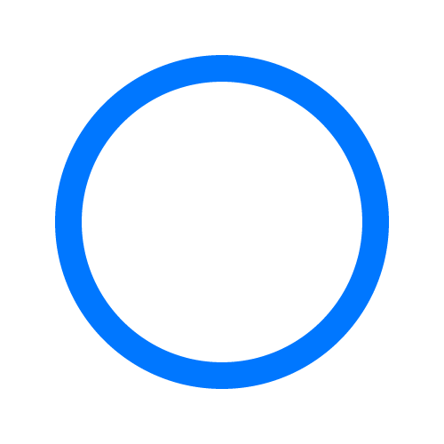
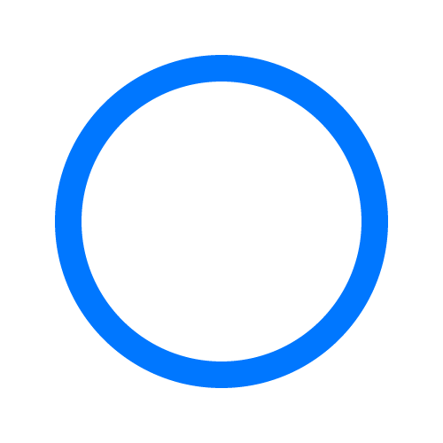

Предуниверсарий МАИ - это современная школа в структуре Московского авиационного института для учеников 8-11 классов с углублённым изучением технических дисциплин (информатики, математики, физики).
Предуниверсарий МАИ - это пространство для реализации, творчества и раскрытия потенциала учащихся.
Предуниверсарий МАИ - это площадка, где в процессе приобретения знаний и достижения результатов, формируется личность, умеющая работать в команде.
Предуниверсарий МАИ - это пространство особого единомыслия, в котором профессионалы и новички, преподаватели и учащиеся, при всем своем многообразии, объединены единым стремлением к расширению и развитию возможностей.
Предуниверсарий МАИ - это сообщество людей из разных областей и сфер интересов, которых объединяет неравнодушие к делу и цель на эффективность.
Предуниверсарий МАИ - это уникальный синтез профессионального коллектива и мотивированных детей.
В Предуниверсарии МАИ раздвигаются рамки школьной программы и приветствуется инициатива детей и учителей.


 
